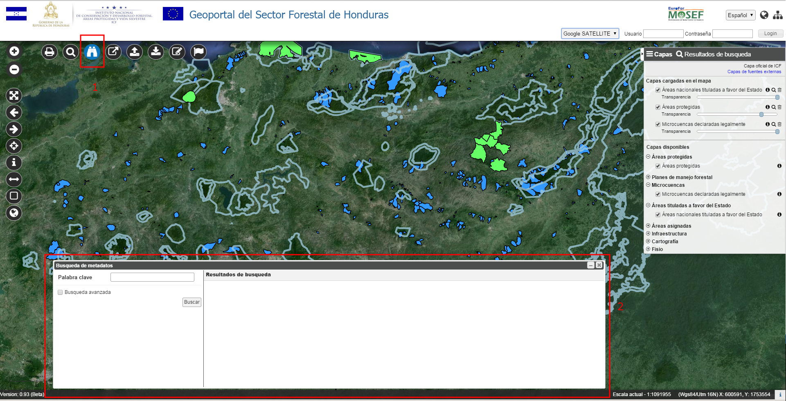
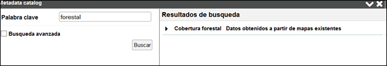
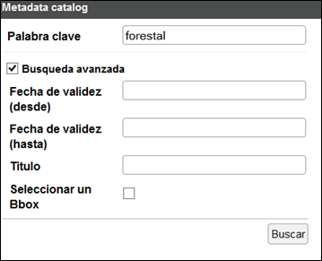
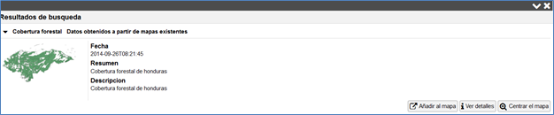

Permite buscar términos adentro del catálogo de metadatos, estableciendo ciertas condiciones.

Busqueda de metadatos
A través de la ventana de Búsqueda de metadatos (Punto 1) , el usuario puede definir en el Panel de búsqueda (2):

Búsqueda simple de metadatos
Con la búsqueda avanzada, el usuario puede elegir diferentes criterios de filtro basados en los campos contenidos en los metadatos

Búsqueda avanzada de metadatos
La ventana de los Resultados de búsqueda de metadatos visualiza la lista de las capas que contienen metadatos que corresponden a los criterios insertados.
Haciendo clic sobre el título de la capa, se abren un panel con las características principales del metadato de las capas, como: Fecha, Resumen, Descripción, juntos con una imagen representativa de la capa.
El panel también contiene botones con las siguientes opciones:

Resultados de búsqueda de metadatos